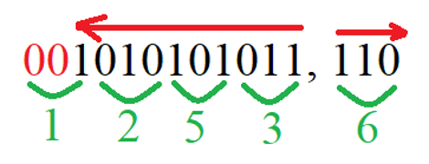
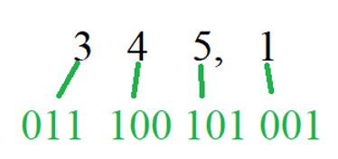
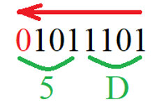
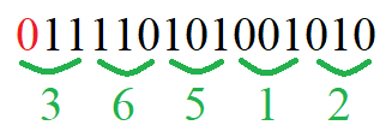

Тема лабораторной работы: «Выполнение операции с разными системами счисления».
Цель: обучение операциям перевода из двоичной системы счисления в восьмеричную, шестнадцатеричную и наоборот.
Оборудование: интерактивная доска для демонстрации компьютера учителя.
Ход занятия:
Актуализация знаний
Изложение нового материала
Основной операцией, связанной с разными системами счисления, является преобразование из одной системы счисления в другую. Самым удобным способом преобразования из двоичной системы счисления в восьмеричную и/или шестнадцатеричную и наоборот является способ перевода с помощью таблиц триады и тетрады.
Таблица 1 – Таблица перевода из двоичной системы счисления в восьмеричную и наоборот
|
Цифра в восьмеричной системе счисления |
Двоичное представление |
Цифра в восьмеричной системе счисления |
Двоичное представление |
|
0 |
000 |
4 |
100 |
|
1 |
001 |
5 |
101 |
|
2 |
010 |
6 |
110 |
|
3 |
011 |
7 |
111 |
Таблица 2 – Таблица перевода из двоичной системы счисления в шестнадцатеричную и наоборот
|
Цифра в шестнадцатеричной системе счисления |
Двоичное представление |
Цифра в шестнадцатеричной системе счисления |
Двоичное представление |
|
0 |
0000 |
8 |
1000 |
|
1 |
0001 |
9 |
1001 |
|
2 |
0010 |
A |
1010 |
|
3 |
0011 |
B |
1011 |
|
4 |
0100 |
C |
1100 |
|
5 |
0101 |
D |
1101 |
|
6 |
0110 |
E |
1110 |
|
7 |
0111 |
F |
1111 |
Задание 1. Перевести смешанное число из 1010101011, *** из двоичной системы счисления в восьмеричную.
Решение
Смешанными называют такие числа, которые имеют как целую, так и дробную часть.
Воспользуемся таблицей 1 и переведем целую и дробную части двоичного числа в восьмеричные части:

В результате 1010101011, 110 2 = 1253,6 8
Ответ: 1253,6 8
Задание 2. Перевести число из 345,1 из восьмеричной системы счисления в двоичную.
Решение
Воспользуемся таблицей 1 и переведем целую и дробную части восьмеричного числа в двоичные части:

В результате 435,1 8 = 11100101,001 2.
Задание 3. Перевести число 1011101 из двоичной системы счисления в шетснадцатеричную.
Решение
Воспользуемся таблицей 2 и переведем двоичное число в шестнадцатеричную:

В результате 1011101 2 = 5D 16.
Задание 4. Перевести из шестнадцатеричной системы счисления число 3 D 4 A в восьмеричную.
Решение
Сначала переведем шестнадцатеричное число в двоичную систему счисления:

В результате 3 D 4 A 16 = 11110101001010 2
Теперь переведем полученное двоичное число в восьмеричную систему счисления:

В результате 11110101001010 2 = 36512 8.
Ответ: 3 D 4 A 16 = 36512 8.
Вопросы и задания для самоконтроля